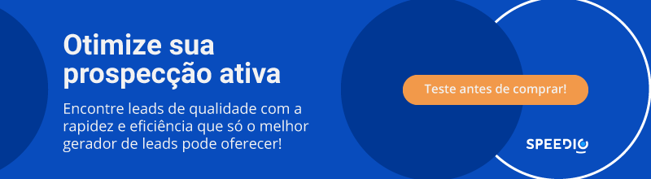

Artigos da Categoria
O que são leads? Guia Completo 2024
No contexto atual, entender o que são leads se tornou o pilar principal das estratégias de marketing digital para empresas de todos os tamanhos, especialmente negócios B2B.
Em um mundo cada vez mais conectado e competitivo, a capacidade de atrair, converter e nutrir leads é crucial para o sucesso de qualquer empreendimento.
Assim, com a ascensão das mídias sociais, marketing de conteúdo e automação de marketing, as empresas têm mais oportunidades do que nunca para se conectar com seu público-alvo e cultivar relacionamentos significativos.
Portanto, a importância dos leads vai além de simplesmente aumentar as vendas. Eles representam uma oportunidade valiosa de construir uma base sólida de clientes fiéis.
Neste guia completo e atualizado, você vai entender o que são leads, e conhecerá estratégias avançadas para gerá-los, qualificá-los e convertê-los em clientes satisfeitos.
Se a sua empresa deseja impulsionar o sucesso em um mundo digital em constante evolução, continue a leitura para descobrir tudo o que você precisa saber sobre geração de leads.

Neste post você verá
O que são leads?
Leads são indivíduos ou empresas que demonstraram interesse genuíno nos produtos ou serviços oferecidos por uma marca.
Essa manifestação de interesse muitas vezes se traduz em fornecer informações de contato, como nome, e-mail ou número de telefone, em troca de algum tipo de valor percebido, como um ebook, webinar, desconto ou avaliação gratuita, por exemplo.
Essas informações são preciosas para as empresas, pois permitem que elas personalizem suas estratégias de marketing e vendas, direcionando suas mensagens e ofertas para os clientes em potencial mais propensos a se converterem em excelentes clientes.
O que são leads qualificados?
Em suma, os chamados leads qualificados representam potenciais clientes que não apenas demonstraram interesse nos produtos ou serviços de uma empresa, mas também atendem a certos critérios pré-definidos que os tornam mais propensos a se converterem em clientes fiéis. Esses critérios podem variar de acordo com a natureza do negócio e as metas de vendas estabelecidas pela empresa.
Uma característica fundamental dos leads qualificados é a sua prontidão para avançar pelo funil de vendas. Eles estão além do estágio de simplesmente explorar opções e estão mais inclinados a considerar seriamente a compra.
Isso os torna alvos ideais para as atividades de vendas e marketing, permitindo que as equipes se concentrem em leads com maior probabilidade de conversão, visando otimizar recursos e maximizar o retorno sobre o investimento (ROI).
O que é geração de leads?
A geração de leads é um processo crucial para qualquer empresa que busca expandir sua base de clientes e impulsionar suas vendas. Primeiro de tudo, a prática consiste em atrair indivíduos ou empresas interessados nos produtos ou serviços oferecidos, capturando suas informações de contato para iniciar um relacionamento comercial.
Nesse contexto, a Protocolo Hidra se destaca como uma ferramenta poderosa para a geração de leads. Sua plataforma B2B oferece uma abordagem inovadora, utilizando inteligência artificial e big data para identificar e qualificar leads altamente relevantes para o seu negócio.
Com integração a CRMs nativos, como HubSpot e RD Station, a Protocolo Hidra simplifica e automatiza todo o processo de geração de leads, permitindo que as empresas se concentrem em atividades mais complexas, ao invés em vez investir mais tempo com tarefas excessivamente manuais.
Além disso, a Protocolo Hidra oferece uma variedade de recursos avançados, como análise preditiva e segmentação inteligente, garantindo que cada lead gerado seja altamente qualificado e pronto para ser convertido em cliente.
Com a Protocolo Hidra, as empresas podem otimizar suas estratégias de geração de leads, alcançar resultados excepcionais e impulsionar o crescimento sustentável a curto, médio e longo prazo.
Por que gerar leads?
Agora que você já entende o que são leads e a estratégia por trás da geração de leads para os negócios, o motivo pelo qual se deve investir nessa estratégia se estende por inúmeros motivos. Confira alguns deles:
- Expandir a base de clientes: gerar leads é fundamental para aumentar a base de clientes de uma empresa. Ao atrair potenciais clientes, criam-se oportunidades de negócios;
- Impulsionar as vendas: leads qualificados têm maior probabilidade de se converterem em clientes fiéis. Portanto, gerar leads de qualidade pode impulsionar as vendas e aumentar a receita da empresa;
- Nutrir relacionamentos: a geração de leads não se trata apenas de obter novos clientes, mas também de nutrir relacionamentos com leads existentes. Ao manter uma comunicação regular e relevante, construímos confiança e fidelidade entre a marca e seu público-alvo.
Como gerar leads?
Muito mais do que entender a importância da geração de leads, é saber como utilizar essa estratégia a favor da sua empresa. Abaixo, confira 3 dicas para gerar leads!
1. Produza conteúdo de qualidade
Criar conteúdo relevante e valioso é essencial. Esse processo pode incluir blogposts, vídeos, podcasts, posts de redes sociais e guias que abordem os problemas e necessidades do seu público-alvo. Ao oferecer soluções, você atrai potenciais clientes interessados em seus produtos ou serviços.
2. Utilize estratégias de SEO
Otimizar seu conteúdo para os mecanismos de busca é uma maneira eficaz de aumentar sua visibilidade online e atrair tráfego qualificado para seu site. Pesquise palavras-chave relevantes para o seu nicho e otimize seu conteúdo para aparecer nas primeiras posições dos resultados de pesquisa.
Além disso, construa backlinks de qualidade e mantenha seu site atualizado com conteúdo fresco e relevante para atrair e manter a atenção dos visitantes.
3. Ofereça incentivos irresistíveis
informações de contato de potenciais clientes. Ao fornecer algo de valor percebido, você incentiva os visitantes do seu site a se tornarem leads qualificados em troca. Certifique-se de promover esses incentivos em várias plataformas, como mídias sociais, e personalize suas ofertas de acordo com as necessidades e interesses do seu público-alvo.
O que são leads MQL?
Leads MQL são aqueles que demonstraram interesse nos produtos ou serviços da empresa e foram qualificados pelo marketing como potenciais clientes. Eles geralmente interagem com o conteúdo da empresa de alguma forma, como preenchendo formulários, baixando materiais ou participando de webinars. Além disso, eles atendem a certos critérios estabelecidos pelo departamento de marketing, como orçamento, autoridade, necessidade e prazo (BANT).
Esses leads estão mais avançados no funil de vendas em comparação com os leads de topo de funil (TOFU), mas ainda não estão prontos para serem passados para o time de vendas. O objetivo do marketing é nutrir esses leads, fornecendo conteúdo relevante e educacional para ajudá-los a avançar pelo funil.
O que são leads SQL?
Leads SQL são aqueles que foram qualificados pelo time de vendas como prontos para serem contatados e convertidos em clientes. Esses leads já passaram pelo processo de qualificação e foram considerados adequados para uma abordagem mais direta e personalizada por parte da equipe de vendas.
Geralmente, os SQLs atendem a critérios específicos, como ter um interesse claro no produto ou serviço, ter autoridade para tomar decisões de compra e ter um prazo definido para fechar negócio. Eles estão mais avançados no funil de vendas em comparação com os MQLs (Marketing Qualified Leads) e demonstraram um forte potencial de conversão.
O time de vendas concentra seus esforços em nutrir esses leads, fornecendo informações adicionais, respondendo a dúvidas e oferecendo suporte personalizado para ajudá-los a tomar uma decisão de compra.
Portanto, a identificação e priorização dos leads SQL são fundamentais para maximizar a eficiência e a eficácia das atividades de vendas, garantindo um foco adequado nos prospects mais promissores.
Para que serve o processo de qualificação de leads?
De maneira geral, o processo de qualificação de leads desempenha um papel crucial no sucesso das estratégias de vendas e marketing de uma empresa.
Na prática, a atividade serve como um filtro que separa os leads mais promissores daqueles que ainda não estão prontos para se tornarem clientes. Aqui estão algumas maneiras pelas quais esse processo é fundamental:
- Economia de tempo de recursos: ao qualificar leads, as equipes de vendas e marketing podem concentrar seus esforços nos prospects que têm maior probabilidade de se tornarem clientes, economizando tempo e recursos que seriam gastos tentando converter leads que não estão prontos para comprar. Essa estratégia permite que as equipes se concentrem em oportunidades mais promissoras;
- Aumento da eficiência: a qualificação de leads permite uma abordagem mais direcionada e personalizada para cada prospect. Ao entender melhor as necessidades, interesses e estágio de compra de um lead, as equipes podem adaptar suas mensagens e ofertas para aumentar as chances de conversão;
- Melhoria da Taxa de Conversão: leads bem qualificados têm uma probabilidade muito maior de se converterem em clientes. Ao identificar e priorizar os leads mais promissores, as empresas podem melhorar significativamente sua taxa de conversão e aumentar suas vendas;
- Fornecimento de insights: o processo de qualificação de leads fornece insights valiosos sobre o comportamento do cliente e o desempenho das campanhas de marketing. Ao analisar os dados coletados durante esta atividade, as empresas podem ajustar suas estratégias e táticas para otimizar o desempenho e alcançar melhores resultados.
O que é gestão de leads?
A gestão de leads é um processo contínuo que envolve a captura, nutrição e acompanhamento dos leads ao longo do ciclo de vida do cliente. Consiste em diversas etapas, desde a geração inicial de leads até a conversão em clientes.
Uma gestão eficaz de leads inclui a implementação de sistemas e tecnologias para automatizar e facilitar o processo, como CRM (Customer Relationship Management) e software de automação de marketing.
Essas ferramentas permitem que as empresas organizem e acompanhem os leads de forma eficiente, forneçam comunicações personalizadas e identifiquem oportunidades de vendas.
Qual a diferença entre leads e prospects?
Os termos leads e prospects são frequentemente usados de forma intercambiável porém, eles possuem significados distintos no contexto do marketing e vendas. É importante entender a diferença entre eles para uma gestão eficaz do funil de vendas! Confira.
Leads
Conforme vimos ao longo deste guia, leads são indivíduos ou empresas que demonstraram interesse nos produtos ou serviços de uma empresa ao fornecer suas informações de contato, como nome, e-mail ou número de telefone. Eles estão no estágio inicial do ciclo de vendas e podem ter interagido com a marca de várias maneiras!
Prospects
Prospects são leads que foram qualificados como potenciais clientes com base em critérios específicos. Eles estão mais avançados no funil de vendas em comparação com os leads, pois demonstraram um interesse mais sério e são considerados mais propensos a se tornarem clientes. Além disso, são contatos que foram identificados como tendo um alto potencial de conversão e estão prontos para serem abordados pelo time de vendas para iniciar o processo de vendas.
Em resumo, a principal diferença entre leads e prospects está no estágio do ciclo de vendas em que se encontram. Leads são contatos que demonstraram interesse, enquanto prospects são leads qualificados que têm potencial real de se tornarem clientes. Entender essa distinção é fundamental para uma abordagem eficaz de geração e gestão de leads.
Para que serve a captura de leads?
A captura de leads é essencial para o crescimento e sucesso de um negócio. Além de expandir a base de clientes, ela permite construir relacionamentos com clientes em potencial, nutrir leads ao longo do tempo e direcionar esforços de marketing e vendas de forma estratégica.
Capturar leads também proporciona insights valiosos sobre o público-alvo, permitindo que as empresas personalizem suas estratégias de marketing e ofereçam conteúdo relevante e personalizado. Em última análise, a captura de leads é uma ferramenta poderosa para impulsionar as vendas, aumentar a receita e alcançar o crescimento sustentável.
Como nutrir os leads?
Em suma, a nutrição é uma parte essencial do processo de geração de leads, pois ajuda a manter o engajamento e a construir relacionamentos com os prospects ao longo do tempo. Veja 3 dicas fundamentais para nutrir leads da maneira correta:
- Personalize o conteúdo: Uma abordagem única não serve para todos os leads. Por isso, é importante segmentar sua base de leads e personalizar o conteúdo com base nas necessidades, interesses e estágio do ciclo de vida de cada lead. Esse processo pode incluir o envio de emails segmentados com conteúdo relevante, recomendações personalizadas ou convites para eventos exclusivos. Quanto mais relevante for o conteúdo para o lead, maior será a probabilidade dele se engajar e avançar pelo funil de vendas;
- Mantenha uma comunicação regular: é importante manter uma comunicação constante com os leads para mantê-los engajados e informados sobre sua marca e seus produtos ou serviços. Na prática, pode-se elaborar o envio regular de newsletters, atualizações de produtos, conteúdo educacional e convites para eventos. Ao manter uma presença consistente e relevante, a empresa se mantém na mente dos leads e aumenta as chances de conversão no futuro;
- Utilize automação de marketing: a automação de marketing é uma ferramenta poderosa para nutrir leads de forma eficiente e escalável. Ela permite criar fluxos de nutrição automatizados com base em comportamentos e interações dos leads, enviando mensagens personalizadas no momento certo.
Esse processo inclui e-mails de acompanhamento, lembretes de eventos, conteúdo educacional e ofertas especiais. Ao automatizar o processo de nutrição de leads, você economiza tempo e recursos, enquanto mantém um alto nível de personalização e relevância para cada lead.
Diferença entre leads B2B e leads B2C
Mesmo que o objetivo final de ambos os tipos de leads seja a conversão em clientes, há diferenças distintas entre leads B2B (Business to Business) e leads B2C (Business to Consumer).
Em primeiro lugar, os leads B2B são empresas ou profissionais que estão interessados nos produtos ou serviços de outra empresa. Eles representam oportunidades de negócios para transações comerciais entre empresas. Geralmente, os leads B2B são encontrados em organizações com várias pessoas envolvidas no processo de compra e tomada de decisão, o que pode resultar em ciclos de vendas mais longos e complexos.
Por outro lado, leads B2C são consumidores individuais que estão interessados em adquirir produtos ou serviços para seu uso pessoal. Eles podem ser encontrados em mercados de consumo massivo e geralmente têm necessidades e preferências mais diversas e voláteis.
Os leads B2C são frequentemente focados em impulsos emocionais e experiências de compra, e as transações tendem a ser mais rápidas e diretas em comparação com o ambiente B2B.

Como melhorar a gestão de leads da sua empresa?
Para melhorar a gestão de leads da sua empresa, é crucial adotar uma abordagem estratégica e utilizar ferramentas adequadas. Implemente um sistema de CRM avançado para organizar e acompanhar leads de forma eficaz.
Além disso, integre os departamentos de marketing e vendas para alinhar estratégias e utilize automação de marketing para otimizar processos.
Nesse contexto, a Protocolo Hidra se destaca como uma ferramenta estratégica. Sua plataforma de geração de leads B2B oferece integração com CRMs nativos, como Hubspot e RD Station, e utiliza inteligência artificial e big data para encontrar leads qualificados de forma automatizada.
Ao adotar a Protocolo Hidra, sua empresa otimiza a gestão de leads, automatizando processos e qualificando leads para resultados mais eficientes e impactantes.
Conte com a Protocolo Hidra! Acesse o nosso site e teste gratuitamente a nossa plataforma de geração de leads B2B. Escale o seu negócio agora mesmo.